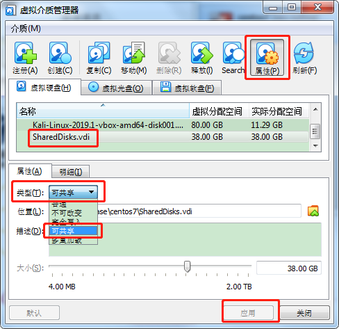

搭建RAC
[toc]
硬件环境
添加共享盘

分区共享盘
fdisk /dev/sdb
Welcome to fdisk (util-linux 2.23.2).
Changes will remain in memory only, until you decide to write them.
Be careful before using the write command.
Command (m for help): m
Command action
a toggle a bootable flag
b edit bsd disklabel #编辑分区的硬盘标签
c toggle the dos compatibility flag
d delete a partition #删除分区与n对应
g create a new empty GPT partition table
G create an IRIX (SGI) partition table
l list known partition types #列出已知分区的类型
m print this menu #帮助信息
n add a new partition #**创建新分区**
o create a new empty DOS partition table
p print the partition table #打印分区表
q quit without saving changes #不保存的退出
s create a new empty Sun disklabel
t change a partition's system id
u change display/entry units
v verify the partition table
w write table to disk and exit #保存分区信息到硬盘，并退出。
x extra functionality (experts only)
分区过程
Command (m for help): n
Partition type:
p primary (1 primary, 0 extended, 3 free) #p:主分区，e为扩展分区入口。（）为汇总：1 个主分区，0个扩展分区，3个自由主分区，就是可用的额。
e extended
Select (default p): p
Partition number (2-4, default 2): #默认为2分区，如想默认，回车下一步。
First sector (4196352-79691775, default 4196352): #如想默认，回车下一步。
Using default value 4196352
Last sector, +sectors or +size{K,M,G} (4196352-79691775, default 79691775): +2G #s格式必须为+{数字}{大写单位}+size{K,M,G}，小写会如下报错
#Unsupported suffix: 'g'.
#Supported: 10^N: KB (KiloByte), MB (MegaByte), GB (GigaByte)
# 2^N: K (KibiByte), M (MebiByte), G (GibiByte)
Partition 2 of type Linux and of size 2 GiB is set
最终结果：
Command (m for help): p
Disk /dev/sdb: 40.8 GB, 40802189312 bytes, 79691776 sectors
Units = sectors of 1 * 512 = 512 bytes
Sector size (logical/physical): 512 bytes / 512 bytes
I/O size (minimum/optimal): 512 bytes / 512 bytes
Disk label type: dos
Disk identifier: 0x9096df96
Device Boot Start End Blocks Id System
/dev/sdb1 2048 4196351 2097152 83 Linux
/dev/sdb2 4196352 8390655 2097152 83 Linux
/dev/sdb3 8390656 12584959 2097152 83 Linux
/dev/sdb4 12584960 79691775 33553408 5 Extended
/dev/sdb5 12587008 16781311 2097152 83 Linux
/dev/sdb6 16783360 20977663 2097152 83 Linux
/dev/sdb7 20979712 25174015 2097152 83 Linux
/dev/sdb8 25176064 29370367 2097152 83 Linux
/dev/sdb9 29372416 33566719 2097152 83 Linux
/dev/sdb10 33568768 37763071 2097152 83 Linux
/dev/sdb11 37765120 41959423 2097152 83 Linux
/dev/sdb12 41961472 46155775 2097152 83 Linux
/dev/sdb13 46157824 50352127 2097152 83 Linux
/dev/sdb14 50354176 54548479 2097152 83 Linux
Command (m for help): w
The partition table has been altered!
Calling ioctl() to re-read partition table.
Syncing disks.
软环境
时间(All nodes)
date -s '20200115 21:51:00'
hwclock -w #同步BIOS
Log File: /u01/app/oraInventory/logs/installActions2020-01-15_04-19-30AM.log
创建用户和用户组
-
Create an Oracle Software inventory group on each node
-
Group ID must be consistent on each node.
groupadd -g 501 oinstall-
Create the Oracle Software owner on each node.
-
User ID must consistent on each node and the inventory group must be the primary group .
-
Most Oracle products (Grid Infrastrunture,database ,Enterprise Manager,and so on ) ar usually owned by the same user,typeically called
oracle,but each product can be owned by a different user. -
useradd -u 501 -g oinstall oracleoruseradd -u 502 -g oinstall grid
-
用户与用户级说明
Create the required operating system groups and users:
-
Groups:
-
oinstall #GI和数据库软件的主组
- dba #数据库DBA组，对数据库拥有数据权限
-
Optional groups (for separation of duty across mutiple users):
- oper
- asmdba ASM实例的dba组，可启动，关闭实例，挂载，卸载ASM磁盘组
- asmoper
- asmadmin ASM管理组，包含asmdba的全部权限，可增，删ASM磁盘组，磁盘。
-
Users:
-
Software owner,usually oracle
-
Can create multiple users for mutiple product installations
（角色与产品安装需要分离）
角色任务分离
两节点创建用户与用户组
groupadd -g 1000 oinstall
groupadd -g 1001 dba
groupadd -g 1002 oper
groupadd -g 2000 asmadmin
groupadd -g 2001 asmdba
groupadd -g 2002 asmoper
useradd -u 500 -g oinstall -G dba,oper,asmdba oracle
useradd -u 501 -g oinstall -G asmadmin,asmdba,asmoper grid
echo "oracle" | passwd --stdin oracle
echo "oracle" | passwd --stdin grid
两节点创建目录
mkdir -p /u01/app/11.2.0/grid
mkdir -p /u01/app/grid
chown -R grid:oinstall /u01
mkdir -p /u01/app/oracle
chown oracle:oinstall /u01/app/oracle
chmod -R 775 /u01
配置网络
RAC IP
网络规划
#public IP
192.168.6.102 rac02.AutoML.com #rac02.enp0s3
192.168.6.101 rac01.AutoML.com #rac01.enp0s3
#Virtual IP 不要网卡的
192.168.6.103 rac01-vip.AutoML.com
192.168.6.104 rac02-vip.AutoML.com
#Private IP
10.0.0.101 rac01-priv.AutoML.com
10.0.0.103 #rac01.enp0s10
10.0.0.102 rac02-priv.AutoML.com
10.0.0.104 #rac02.enp0s10
#SCAN VIP （DNS解析）Single client access Name 也不要网卡
192.168.6.111 cluster01-scan.AutoML.com
192.168.6.112 cluster01-scan.AutoML.com
192.168.6.113 cluster01-scan.AutoML.com
安装包
依赖包
Oracle Linux 7 and Red Hat Enterprise Linux 7 ( The following packages (or later versions) must be installed:)
binutils-2.23.52.0.1-12.el7.x86_64
compat-libcap1-1.10-3.el7.x86_64
compat-libstdc++-33-3.2.3-71.el7.i686
compat-libstdc++-33-3.2.3-71.el7.x86_64
gcc-4.8.2-3.el7.x86_64
gcc-c++-4.8.2-3.el7.x86_64
glibc-2.17-36.el7.i686
glibc-2.17-36.el7.x86_64
glibc-devel-2.17-36.el7.i686
glibc-devel-2.17-36.el7.x86_64
ksh
libaio-0.3.109-9.el7.i686
libaio-0.3.109-9.el7.x86_64
libaio-devel-0.3.109-9.el7.i686
libaio-devel-0.3.109-9.el7.x86_64
libgcc-4.8.2-3.el7.i686
libgcc-4.8.2-3.el7.x86_64
libstdc++-4.8.2-3.el7.i686
libstdc++-4.8.2-3.el7.x86_64
libstdc++-devel-4.8.2-3.el7.i686
libstdc++-devel-4.8.2-3.el7.x86_64
libXi-1.7.2-1.el7.i686
libXi-1.7.2-1.el7.x86_64
libXtst-1.2.2-1.el7.i686
libXtst-1.2.2-1.el7.x86_64
make-3.82-19.el7.x86_64
sysstat-10.1.5-1.el7.x86_64
Oracle asmlib : Oracle ASMLib Downloads for Red Hat Enterprise Linux 7
including :
oracleasmlib-2.0.12-1.el7.x86_64.rpm
oracleasm-support-2.1.11-2.el7.x86_64.rpm
RedHat https://access.redhat.com/solutions/315643
-
Install the ASMLib kernel module package as root using the following command:
yum install kmod-oracleasm -
Install the ASMLib library package obtained from step 2 as root using the following command, with the downloaded package:
yum localinstall oracleasmlib-<version>.x86_64.rpm # Where <version> is the revision downloaded in the previous step
- Install the ASMLib utilities package obtained from step 2 as root using the following command, with the downloaded package:
yum localinstall oracleasm-support-<version>.x86_64.rpm
yum install
[root@rac02 ~]# oracleasm init
Creating /dev/oracleasm mount point: /dev/oracleasm
Loading module "oracleasm": oracleasm
Configuring "oracleasm" to use device physical block size
Mounting ASMlib driver filesystem: /dev/oracleasm
[root@rac02 ~]# oracleasm status
Checking if ASM is loaded: yes
Checking if /dev/oracleasm is mounted: yes
关闭防火墙
Centos 7 Before
service iptables stop
chkconfig --list iptables
chkconfig iptable off
Centos 7 After
systemctl stop firewalld.service
systemctl disable firewald.service
find . -type f -name 'oracleasm.ko' ./3.10.0-1062.el7.x86_64/extra/oracleasm/oracleasm.ko
配置ASM磁盘
配置（all nodes）
- configure
-
init
-
clean disk
-
create disk
-
scan disk
```shell oracleasm scandisks 出现异常： #Unable to instantiate disk "****"时，检查：oracleasm status 是否全部成功初始化： Checking if ASM is loaded: yes Checking if /dev/oracleasm is mounted: yes 如果为NO时，请用oracleasm init初始化。
```